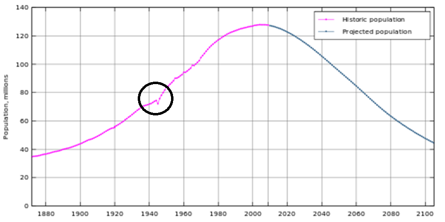
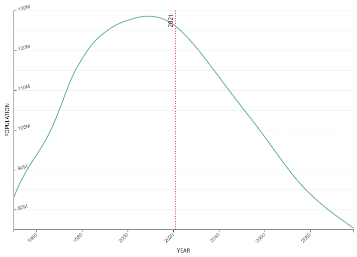
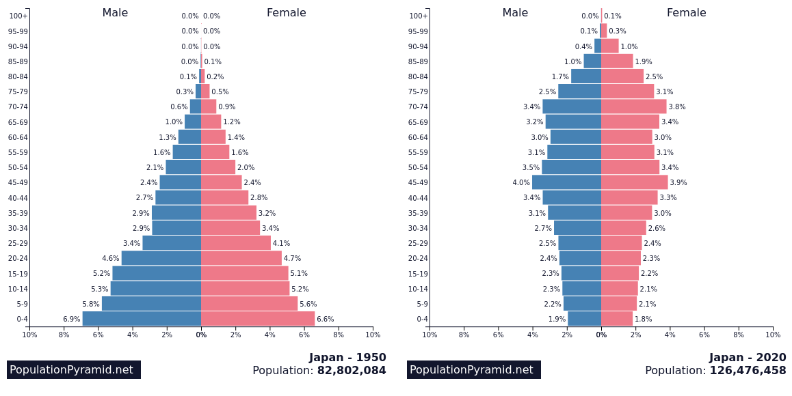
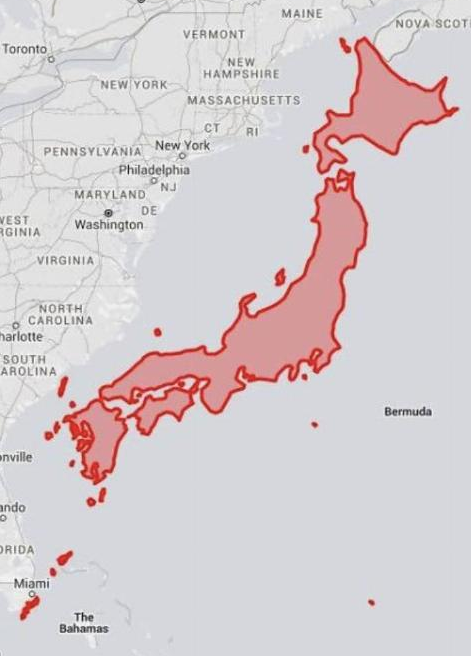
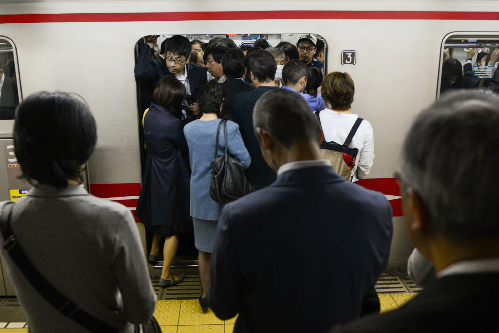
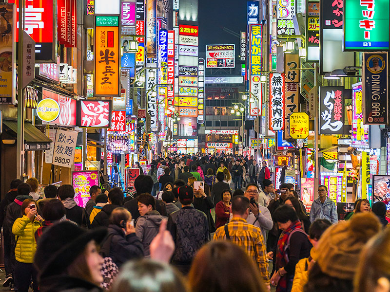

You should be really happy to see this. As of this class you will have covered 74 of the 96 kana! You have one more set after this and we are done. That's a big milestone on the horizon, so you should be very happy. The next step is to get comfortable using them to write and read Japanese signs. The kanji will be much more difficult, but just knowing the kana is a big step.
The first set of 4 hiragana are all realted to the NO symbol. Take a quick look NO or の is a clockwise curl. It comes in from quadrant I to III and then it goes around in almost a full circle. The other three kana have the same component. So, it should be easier to learn these together. Now, it is also extraordinary that the katakana have similarities, too. So, this should be easier all around.
The other four are just an odd bunch of ducks. Some of them have similar elements like WA and RE. Otherwise they are just odd things to learn. Buckle down and practice them. You are very close and then you will be able to use this tool to your advantage.
 Just before the start of World War II, Japan had a huge population and they were looking for places to put them. They had invaded part of Korea, China, and Formosa, in order to export some of their people and releive the pressure. By the end of World War II, that was no longer a problem. The population of Japanese women is noticably higher than men of that age because so many men were lost to the war. Even so, the war only dented the population growth--it did not deter it.
The population of Japan, like many countries was on an exponential growth curve and even a war or two wouldn't change that. In many countries at that time, women were still having fairly large families of at least 4 children and often more. A family of 12 was unusual, but not grossly so. People knew that many of their children would die before adulthood and they also lived a more agrarian lifestyle where a whole family could work to make the farm profitable. Like many countries, Japan was in exactly that position.
 But as with the United States, England, and Canada, Japan's growth is slowing. As of 2009, the Japanese population has reached its maximum at about 129 million. Already it is down to 126 million. If projections hold, the population will continue to decrease. Today, Japanese families have only 1.3 children on average which means that for the most part, there are fewer children than parents. They put all their love into one or maybe two children that will almost certainly grow to adulthood. Actually, Canada (1.47), England (1.65), and the US (1.7) have larger families than most Japanese. The Japanese are serious about controlling the population of their country.
 When a country goes through those kinds of changes, we like to look at their "population pyramid". This graph reveals the relative size of each cohort or age group within the population. On the left is the Japanese population not long after WW II. It is a true pyramid which is typical of countries with many children in a family, but few who survive. On the right is Japan's population today. It is no longer a pyramid. The base of the pyramid is decreasing leaving a larger population of old people. This is a problem that is facing the US and other industrial nations, too. Who is going to take care of so many grandparents when there are not enough children and grandchildren to do the job?
There are many theories about why no children are being born. In Japan, it is still normal for the husband to be the only worker and to have a good job to take care of his family. Once Japanese businesses had a policy that they would never fire someone once hired and the workers had to show extreme loyalty to the company as a result. Today, there are fewer jobs like this and the never-fire policy is long gone. Fewer young men can afford to get married and raise a family. Many of these young men feel ashamed and lonely. They are not a good marriage prospect, so they can't even get a date. It doesn't help that there are already 500,000 more young men (age 20-30) than women for them to marry.
 The population also matters because of the space in which they live. Japan is not too tiny. It's about as big as the original 13 colonies. Still, that is not a lot of space to put that size a population today. Our Eastern seaboard is pretty full, all the states from Maine to Florida only have 120 million people. Japan is far more crowded.
 While the Japanese are very civic minded and careful not to take up too much space it is just plain crowded. Many Japanese ride into the city every day for work on one of their fast trains. There are so many people on the trains and in the terminals that getting to the bathroom is a problem. Many of the commuters wear diapers so they don't have to wait for the bathroom. When grown people choose to pee on themselves the situation is bad.
 The Japanese government knows that less crowding is good, but too few people is bad. In fifty years, 33% of the Japanese will be elderly and very few young people will replace them in the workforce. Maybe that will make the workers more valuable, just as they were in the 1980s. Maybe then young men will find the kind of jobs that will help support a family. Even so it will be another 20 years before the growth will be seen. With more people needing elder care services and fewer people to pay the taxes, it will be hard for Japan to keep going as it is. Something will have to change.